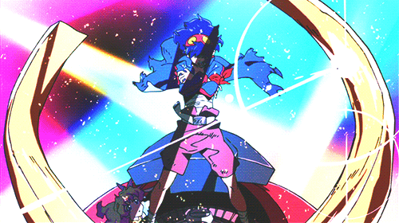
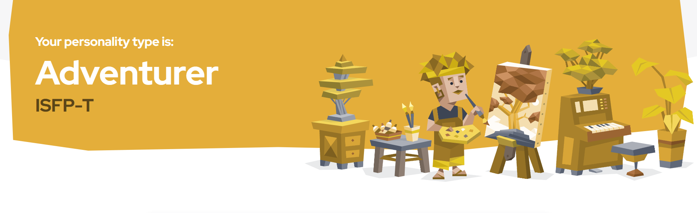

My Personality
My strongest trait is my compassion. I strive to understand and support those around me, always aiming to make a positive impact in their lives.
My Favorite Quote
"Believe in the me that believes in you." – Kamina
Who is Kamina?
Kamina is a charismatic and fearless leader from the anime Tengen Toppa Gurren Lagann. He is known for his unwavering confidence and ability to inspire those around him. His quote emphasizes the power of belief not just in oneself, but in the faith that others have in us. Kamina’s determination and unshakable spirit make him a truly memorable and motivational character.
Personality Test
The ISFP personality type, also known as "The Adventurer," is known for being gentle, sensitive, and artistic. ISFPs are deeply in touch with their emotions and often express themselves through creative outlets. They value authenticity, prefer to live in the present moment, and tend to avoid conflict. ISFPs are often kind-hearted, compassionate, and seek harmony in their relationships. I think this type perfectly resonates with my personality Crazy right?